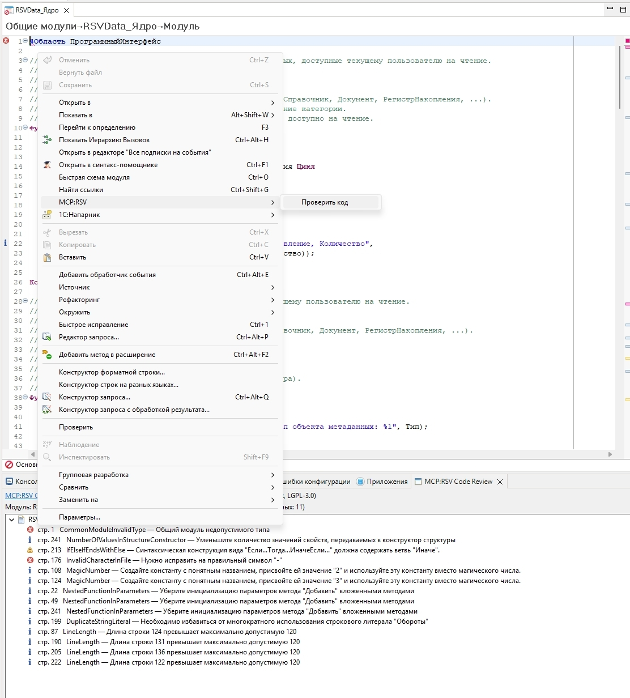
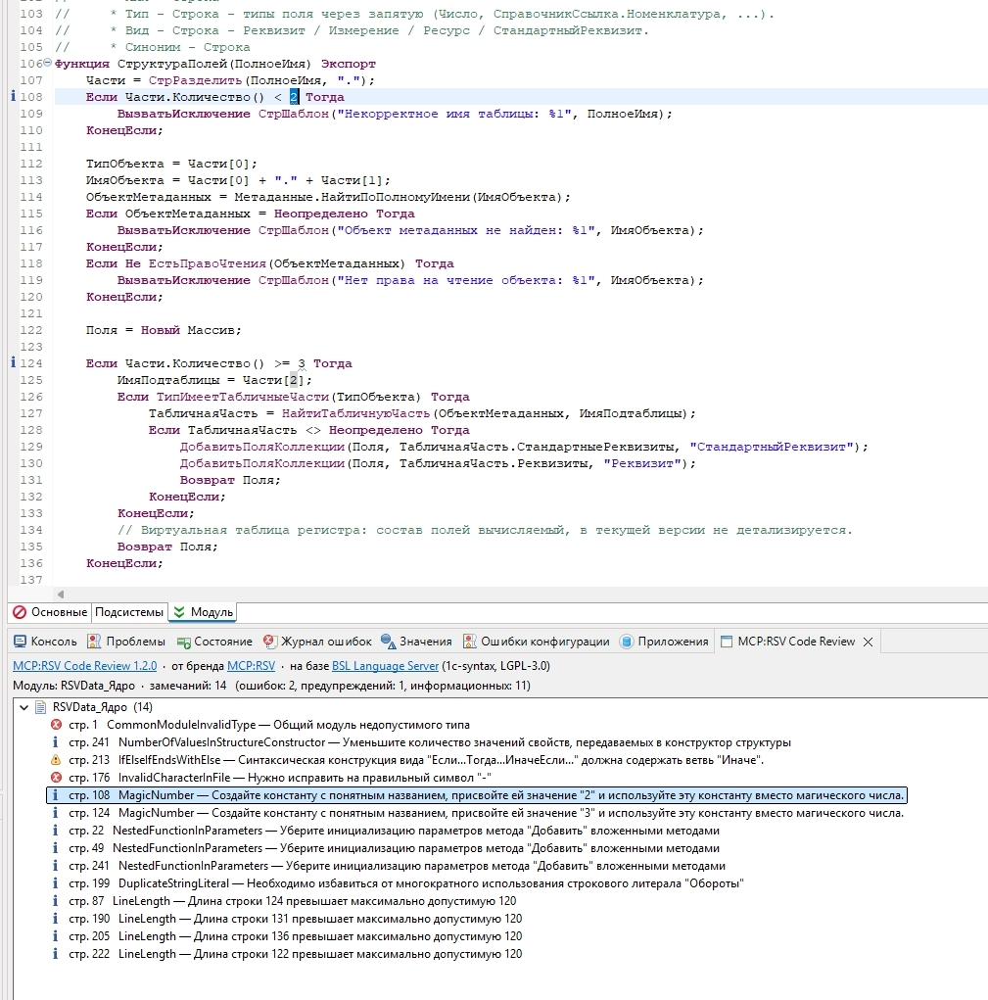
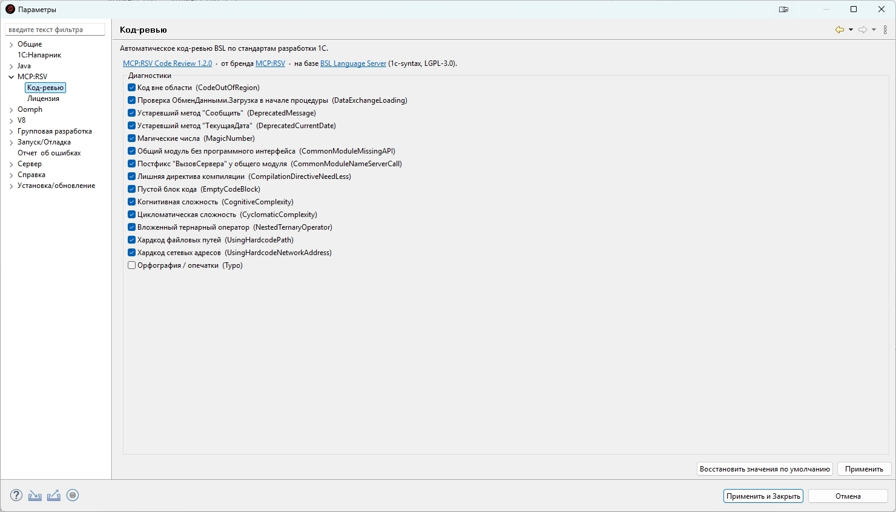

Руководство пользователя
Автор: Радзивиллович Сергей (prepod2003@yandex.ru, Telegram: @Prepod2003, ТГ канал: edt_ai_1c)
Что такое плагин
MCP:RSV Server — плагин для 1C:EDT, встраивающий MCP-сервер (Model Context Protocol) прямо в среду разработки. Плагин даёт ИИ-ассистентам (Claude Code, Cursor, Windsurf, Roo Code, Gemini CLI, Qwen Code) прямой доступ к конфигурациям 1С: метаданным, коду, формам, справке платформы, валидации и даже отладчику.
Плагин запускает HTTP-сервер на 127.0.0.1:8770 внутри EDT. ИИ-ассистент подключается по протоколу MCP (JSON-RPC 2.0 over HTTP) и получает 26 инструментов, распределённых по 3 профилям.
Все данные обрабатываются локально — код конфигурации не передаётся в интернет. Сервер работает прямо внутри IDE, без внешних серверов и SaaS-посредников.
Быстрый старт
Требования
- 1C:EDT 2025.2
- Java 17 (Azul Zulu 17)
- ИИ-ассистент: Claude Code, Cursor, Windsurf, Roo Code, Gemini CLI, Qwen Code или VS Code + Copilot
Установка
- Скачать ZIP-архив
edt-rsv-repository-3.0.0-SNAPSHOT.zipиз релизов - В EDT: Справка → Установить новое ПО...
- Добавить... → Архив... → выбрать скачанный ZIP
- Отметить MCP:RSV Server → Далее → Готово
- Перезапустить EDT
- Проверить:
curl http://localhost:8770/health
Обновление плагина. Следить за новыми версиями вручную не нужно: при запуске EDT плагин сам узнаёт о вышедшем обновлении и предлагает его установить — «Обновить / Позже / Пропустить эту версию». По кнопке «Обновить» новая версия ставится штатным механизмом EDT, останется согласиться на перезапуск. Обновление никогда не ставится молча — только по вашему согласию.
Подключение ИИ-ассистента
Claude Code (файл ~/.claude/claude_desktop_config.json):
{
"mcpServers": {
"1c-rsv": {
"url": "http://127.0.0.1:8770/mcp",
"transport": "http"
}
}
}Cursor / Windsurf (файл .cursor/mcp.json):
{
"mcpServers": {
"1c-rsv": {
"url": "http://127.0.0.1:8770/mcp"
}
}
}Roo Code (VS Code) (файл .roo/mcp.json или настройки Roo Code):
{
"mcpServers": {
"1c-rsv": {
"type": "streamable-http",
"url": "http://127.0.0.1:8770/mcp"
}
}
}Gemini CLI (глобально ~/.gemini/settings.json, или для проекта .gemini/settings.json):
{
"mcpServers": {
"1c-rsv": {
"httpUrl": "http://127.0.0.1:8770/mcp",
"trust": true
}
}
}Для Gemini CLI используется ключ
httpUrl(неurl). Глобальный конфиг~/.gemini/settings.jsonподключает MCP-сервер во всех проектах сразу.
Qwen Code CLI (глобально ~/.qwen/settings.json, или для проекта .qwen/settings.json):
{
"mcpServers": {
"1c-rsv": {
"httpUrl": "http://127.0.0.1:8770/mcp"
}
}
}Сервер автоматически согласует версию MCP-протокола с клиентом — совместим как с новыми (2025-11-25), так и со старыми (2024-11-05) клиентами.
Файл правил для ИИ-ассистента
В комплекте с плагином поставляется файл правил — инструкции, которые учат ИИ-ассистента правильно работать с 1С через MCP. Файл правил:
- Запрещает ИИ читать/редактировать BSL- и MDO-файлы напрямую — только через инструменты MCP
- Объясняет профили и их ограничения
- Учит следовать паттернам конкретной конфигурации (использовать методы БСП, а не платформенные примитивы)
- Обеспечивает управление знаниями — результаты исследований сохраняются между сессиями
- Экономит токены — инструменты вызываются только при необходимости
Скопируйте содержимое CLAUDE.md из комплекта в файл правил вашего ИИ-ассистента:
| ИИ-ассистент | Файл правил | Расположение |
|---|---|---|
| Claude Code | CLAUDE.md | Корень проекта |
| Cursor | .cursor/rules/rules.mdc | Корень проекта |
| Windsurf | .windsurfrules | Корень проекта |
| Roo Code | .roo/rules/rules.md | Корень проекта |
| Gemini CLI | GEMINI.md | Корень проекта |
| Qwen Code | .qwen/rules | Корень проекта |
| Cline | .clinerules | Корень проекта |
Содержимое правил одинаковое для всех ИИ-ассистентов — меняется только расположение файла.
При работе с проектом ИИ-ассистент автоматически создаст в папке .ai/ два файла:
| Файл | Назначение |
|---|---|
.ai/project-knowledge.md | Знания о конфигурации: тип, версия, паттерны кода, ключевые модули |
.ai/current-task.md | Текущая задача: план, статус шагов, хронология |
Рекомендация: добавьте
.ai/в.gitignoreили оставьтеproject-knowledge.mdв репозитории — он может быть полезен всей команде.
Лицензирование
Тарифные планы
MCP:RSV Server распространяется по подписке. Доступны три тарифа:
| Тариф | Инструментов | Доступные группы |
|---|---|---|
| Аналитик | 13 | Анализ метаданных, Анализ кода, Поиск и навигация |
| Разработчик | 23 | + Редактирование кода и отладка, Валидация, Сборка и управление (вкл. экспорт), Диагностика |
| Архитектор | 26 | + Редактирование метаданных (~150 операций), Юнит-тесты YAxUnit, Сценарное тестирование Vanessa |
Подписка платная. Информация об оформлении и оплате — в Telegram-канале @edt_ai_1c.
Пробный период — бесплатно
При первом запуске EDT после установки автоматически открывается диалог активации. Нажмите «Получить пробный период» — плагин активируется с тарифом Архитектор на 14 дней.
Активация подписки
- Оформите подписку на нужный тариф — подробности в Telegram-канале @edt_ai_1c
- Получите код активации (формат:
ACT-DEV-XXXXXXXX) - В EDT откройте Окно → Настройки → MCP:RSV Server → Лицензия → нажмите «Активировать новый код...»
- Введите код → нажмите «Активировать»
Привязка к компьютеру происходит автоматически.
Привязка к компьютеру
Лицензия привязывается к конкретному компьютеру через Machine ID — технический идентификатор, формируемый из аппаратных характеристик устройства.
При переустановке операционной системы или смене компьютера Machine ID изменится. В этом случае введите тот же самый код активации на новой машине: лицензия автоматически перенесётся с сохранением оставшегося срока и тарифа. Дополнительный код для этого получать не нужно.
Если автоматический перенос не сработал (например, лицензия числится заблокированной или её срок уже истёк) — напишите в поддержку:
- Telegram: @Prepod2003
- Email: prepod2003@yandex.ru
Управление лицензией
Окно → Настройки → MCP:RSV Server → Лицензия
| Поле | Описание |
|---|---|
| Статус | АКТИВНА / ИСТЕКЛА / НЕ АКТИВИРОВАН |
| Тариф | Аналитик / Разработчик / Архитектор |
| Действует до | Дата окончания подписки |
| ID компьютера | Технический идентификатор для поддержки |
| Файл лицензии | Путь к локальному кэшу (~/.edt-rsv/license.json) |
Продление подписки
По истечении срока MCP-сервер перестанет запускаться. Для продолжения:
- Приобретите новый код активации
- Введите через «Активировать новый код...» на странице лицензии
Интерфейс управления в EDT
Индикатор в строке состояния
В нижней строке состояния EDT появляется значок MCP:RSV Server с цветным индикатором:
| Цвет | Значение |
|---|---|
| Зелёный | Сервер работает, инструменты доступны |
| Серый | Сервер не запущен |
При наведении отображается порт, количество активных инструментов и URL для подключения.
Контекстное меню (клик по индикатору)
1. Управление сервером: Запустить / Перезапустить / Остановить
2. Профили — быстрое переключение набора инструментов:
- Аналитик [3 группы] — 13 инструментов
- Разработчик [7 групп] — 23 инструмента
- Архитектор [все группы] — 26 инструментов
Активный профиль отмечен галочкой. При переключении реестр инструментов мгновенно перезагружается — перезапуск EDT не требуется.
Профиль и тариф — разные вещи. Тариф лицензии — это потолок доступа, определяемый подпиской. Профиль — пользовательская настройка в рамках тарифа. Например, пользователь с тарифом «Архитектор» может выбрать профиль «Аналитик», чтобы ограничить набор инструментов для ИИ.
3. Группы инструментов — тонкая настройка. Каждая группа имеет чекбокс для включения/отключения независимо от профиля.
Страница настроек
Окно → Настройки → MCP:RSV Server — порт сервера (1024–65535, по умолчанию 8770) и управление группами.
Что умеет плагин — примеры запросов
Главное преимущество MCP-сервера — вы общаетесь с ИИ-ассистентом на естественном языке. Не нужно знать имена инструментов и их параметры. Просто опишите задачу — ассистент сам подберёт нужные инструменты.
Аналитик — изучение конфигурации
Знакомство с конфигурацией:
«Расскажи, что это за конфигурация — тип, версия, какие подсистемы есть, сколько объектов»
«Покажи все справочники, в имени которых есть "Контрагент"»
«Какие реквизиты у документа РеализацияТоваровУслуг? Покажи табличные части с колонками»
Анализ кода:
«Проанализируй подсистему Продажи — какие объекты входят, как связаны, где основная логика»
«Покажи структуру модуля менеджера справочника Номенклатура — какие методы, экспортные ли»
«Кто вызывает метод ПересчитатьСумму в документе ЗаказКлиента? Покажи цепочку вызовов»
«Что изменилось в модуле объекта документа ЗаказКлиента с прошлого коммита?»
Поиск по коду:
«Найди все места, где используется справочник Номенклатура — включая СправочникСсылка и СправочникОбъект»
«Найди в коде все обращения к регистру ЦеныНоменклатуры»
Справка платформы:
«Найди в справке платформы какие параметры принимает ВычислитьВыражениеСГруппировкойМассив»
«Покажи документацию по типу HTTPСоединение — конструктор, методы, свойства»
«Какие есть функции языка запросов 1С для работы с датами?»
Формы и справка:
«Покажи, как выглядит форма списка справочника Партнеры — хочу увидеть картинку»
«Прочитай встроенную справку документа ЗаказКлиента»
Разработчик — код, валидация, отладка
Написание кода:
«Найди в конфигурации примеры использования Запрос.Выполнить и напиши аналогичный метод для выборки цен по номенклатуре»
«Добавь в модуль объекта документа ЗаказКлиента процедуру ПроверитьЗаполнение, которая проверяет наличие строк в табличной части»
«Замени метод ПересчитатьИтоги в модуле формы — вместо прямого расчёта используй вызов серверной функции»
«В большом общем модуле УчётНДФЛ найди строку, где формируется удержанный налог, покажи её с соседними и поправь» —
findнаходит место по тексту в модуле на десятки тысяч строк, не вычитывая его целиком, и отдаёт точные номера строк для правки.
Валидация:
«Проверь ошибки в документе ЗаказКлиента и исправь автоматически где возможно»
«Покажи все ошибки уровня ERROR в проекте — топ-10 самых частых»
Проверка запросов 1С (validate_query):
«Проверь синтаксис этого запроса: ВЫБРАТЬ Наименование ИЗ Справочник.Номенклатура ГДЕ ЭтоГруппа = ЛОЖЬ»
«В процедуре ПодготовитьЗапросПоТоварам модуля менеджера отчёта ОстаткиТоваров есть запрос — прочитай его и прогони через validate_query»
«Пройдись по менеджер-модулю отчёта Продажи — там несколько запросов в разных процедурах, проверь каждый, покажи ошибки с номерами строк»
«Проверь запрос из набора данных НаборПродаж в схеме компоновки отчёта АнализПродаж — это DCS, передай isDcs=true»
«Напиши метод ПолучитьТоварыПоАртикулу(ПрефиксАртикула) с запросом к справочнику Товары и параметром отбора. Перед тем, как вставить в модуль менеджера, проверь запрос через validate_query»
Отладка:
«Поставь точку останова в ПриСозданииНаСервере документа ЗаказКлиента и запусти базу в режиме отладки. Я открою документ — покажи значение Объект.Партнер»
«Запусти юнит-тесты в режиме отладки и остановись на пятой итерации цикла в РасчётСкидки — покажи все переменные»
«Поймай момент возникновения ошибки "Деление на 0" и покажи стек вызовов»
«Вычисли выражение Объект.Товары.Количество() в контексте отладки»
«Подмени значение Коэффициент на 2 и продолжи выполнение»
Сборка:
«Обнови информационную базу из проекта»
«Очисти кэш и пересобери проект — в валидации ложные ошибки»
Внешние обработки и отчёты:
«Собери внешнюю обработку ПроверкаКурсов в файл D:/Обмен/ПроверкаКурсов.epf»
«Выгрузи отчёт АнализПродаж в .erf — путь спросишь у меня»
Проверка кода и запросов — почти на автомате
После записи кода write_module_source сам дожидается проверки EDT и возвращает её результат в том же ответе: список ошибок со строками и готовую подсказку «N ошибок — исправь перед продолжением» либо «0 ошибок — код корректен». Поэтому ИИ-ассистент видит свои ошибки сразу и исправляет их сам, без вашего участия и без отдельного запроса — цикл «записал → проверил → исправил» замыкается автоматически.
Запросы проверяются настоящим парсером 1С (как в редакторе EDT) — достаточно попросить: «проверь запрос», «в процедуре N модуля M есть запрос — проверь его», «пройдись по менеджер-модулю отчёта X и проверь каждый запрос». Ограничение: существование конкретных таблиц и полей в вашей конфигурации проверка пока не контролирует — только синтаксис и структуру.
Можно поставить на автомат. Чтобы не просить каждый раз, пропишите в правилах своего ИИ-ассистента (в Claude Code — CLAUDE.md проекта, в Cursor — Rules for AI, в Windsurf — memories): «перед каждой записью модуля, если в коде есть запрос (присваивание Запрос.Текст = "…"), сначала проверь его и, если есть ошибки, исправь — только потом записывай». Сильные модели соблюдают такое правило стабильно.
Архитектор — создание объектов, форм, отчётов
Создание объектов:
«Создай справочник Товары с реквизитами Наименование (Строка 150), Артикул (Строка 25) и Цена (Число 15,2). Добавь табличную часть Характеристики с колонками Наименование и Значение. Создай форму элемента и установи её основной»
«Создай документ ЗаказПоставщику с реквизитами Контрагент (СправочникСсылка.Контрагенты), Склад, Сумма и табличной частью Товары (Номенклатура, Количество, Цена, Сумма)»
«Создай регистр накопления ОстаткиТоваров с измерениями Номенклатура и Склад, ресурсом Количество, регистратор — ПриходнаяНакладная»
Работа с формами:
«Добавь на форму элемента справочника Товары группу "Основное" с полями Наименование и Артикул, и группу "Цены" с полем Цена»
«Добавь кнопку "Рассчитать итоги" на форму документа ЗаказКлиента и создай для неё обработчик на сервере»
«Подбери стандартную картинку для подсистемы Склад и установи её»
«Добавь на форму таблицу динамического списка по регистру ОстаткиТоваров»
«Положи на форму обработки поле HTML-документа ПревьюОтчёта во всю ширину»
«В поле Характеристика показывай только характеристики выбранной в строке Номенклатуры» — настройка «Связей параметров выбора» (отбор по соседнему реквизиту строки, типичный случай — подчинённый справочник); работает и для поля формы, и для реквизита объекта/табличной части.
«В поле Папка разреши выбирать только группы» — «Параметры выбора» (постоянный отбор фиксированным значением).
Макеты и печатные формы:
«Создай документу Накладная макет печати с шапкой (номер, дата, контрагент), строками товаров и итогом по сумме»
«Сделай отчёт продаж товаров по месяцам: слева список товаров, сверху Январь/Февраль/Март, в ячейках суммы, снизу итоги по каждому месяцу»
«Добавь справочнику Контрагенты макет визитки и именованную область ДанныеКонтакта»
Типы данных и определяемые типы:
«Добавь справочнику Контрагенты реквизит Фото типа ХранилищеЗначения»
«Создай определяемый тип ПользовательСистемы из Справочник.Пользователи и Справочник.ВнешниеПользователи, и добавь его реквизитом документу Поручение»
«Добавь в регистр накопления ТоварыНаСкладах реквизит Комментарий» — реквизиты теперь работают во всех 4 видах регистров
Роли и права доступа:
«Создай роль Менеджер: полные права на документ ЗаказПоставщику, чтение справочника Партнёры — но только записей, где Ответственный совпадает с текущим пользователем» — права с автоматическими зависимостями плюс ограничение доступа на уровне записей (РЛС).
Планы видов характеристик:
«Сделай у плана видов характеристик ДополнительныеРеквизиты тип значения — строка 150 и булево»
«Поменяй тип реквизита Артикул справочника Товары на число 12,0 — не удаляй и не пересоздавай его»
«Собери дополнительные значения характеристик: создай справочник ЗначенияСвойств, подчини его плану видов характеристик ДополнительныеРеквизиты и привяжи как дополнительные значения»
Планы счетов, планы обмена, XDTO:
«Свяжи план счетов Хозрасчетный с планом видов характеристик ВидыСубконто и назначь счёту 41 «Товары» субконто Номенклатура» — план счетов заработает с аналитикой, движения можно заполнять по субконто
«Наполни план обмена ОбменСФилиалами: Номенклатуру и Контрагентов с авторегистрацией, документ Заказ — без авторегистрации»
«Собери XDTO-пакет ОбменДанными: пространство имён http://my/exchange, тип объекта Контрагент со свойствами Наименование (строка) и ИНН (строка)» — типы сразу работают через ФабрикуXDTO
Отчёты СКД:
«Создай отчёт ПродажиПоКонтрагентам с группировкой по контрагентам и сортировкой по сумме»
«Добавь в отчёт условное оформление: если сумма больше 100000, выделить строку жёлтым»
«Добавь в отчёт отбор по периоду и контрагенту»
«В отчёте ПродажиПоКонтрагентам переименуй набор данных и убери лишний отбор по складу, остальное не трогай» — точечная правка готовой схемы, без пересборки
«Свяжи в отчёте набор Продажи с набором РеквизитыОрганизаций по полю Организация»
«Сделай у отчёта второй вариант "Продажи по номенклатуре" — скопируй текущий и поменяй группировку на номенклатуру»
«Вынеси в шапку отчёта быстрые настройки: период и отбор по организации»
Расширения:
«Заимствуй документ ЗаказКлиента в расширение и добавь реквизит КодПроекта»
«В моё расширение заимствуй документ ПоступлениеТоваров и допиши в его объектный модуль «После Обработки проведения» — создавай движения в регистр ДопДДС» — плагин сам включит нужную галочку в расширении, код заработает в предприятии без ручной правки в EDT
Подписки на события:
«Подпиши проведение документов ЗаказКлиента и РеализацияТоваров на обработчик ОбщийМодульПодписок.ПриПроведенииЗаказа» — одна подписка на два документа, в общем модуле появится процедура-заглушка с правильными параметрами
«Создай серверный общий модуль ВызовСервера с разрешённым вызовом с клиента» — модуль сразу с нужными галочками контекста исполнения
HTTP-сервисы:
«Создай HTTP-сервис УправлениеПользователями с корневым URL users, шаблонами /list (GET ПолучитьСписок, POST Создать) и /users/{id} (GET Получить, DELETE Удалить)» — за один вызов появятся сервис, шаблоны, методы и заглушки обработчиков в модуле сервиса
«Добавь в HTTP-сервис ИнтеграцияERP шаблон /orders/{id} с методами GET и PUT»
Права и подсистемы:
«Создай роль ТолькоЧтениеСклад с правами Чтение и Просмотр на все складские справочники»
«Включи документ ЗаказПоставщику в подсистему Закупки»
Тестирование — юнит-тесты и сценарии Vanessa:
«Напиши юнит-тест на функцию РасчётСкидки из ОбщегоНазначенияСервер: скидка 10% от 1000 должна быть 100. Прогони и покажи результат» — код проверяется кодом, отчёт через пару секунд
«Напиши сценарий Vanessa: открыть список Контрагентов, создать элемент с наименованием "Тест", записать и проверить, что он появился в списке. Прогони» — интерфейс проверяется как живым пользователем
«Я добавил в Заказ функцию расчёта суммы со скидкой и кнопку "Пересчитать" на форме. Напиши юнит-тест на функцию и сценарий Vanessa на кнопку, прогони и то, и другое» — полный цикл: и логика, и интерфейс одним заданием. Подробнее — разделы «Юнит-тесты» и «Сценарное тестирование Vanessa»
Три профиля доступа
Набор доступных инструментов определяется профилем — он выбирается на странице настроек плагина в EDT. Полный каталог всех инструментов с описаниями — на странице «Описание инструментов».
- Аналитик — только чтение: изучение и документирование конфигурации, поиск и чтение кода, визуализация форм, справка платформы. Ничего не меняет в проекте.
- Разработчик — всё из «Аналитика» плюс запись BSL-кода с встроенной валидацией, проверка запросов, отладка через ИИ, диагностика производительности (замер, технологический журнал, журнал регистрации), сборка и экспорт внешних обработок и отчётов в .epf/.erf.
- Архитектор — всё из «Разработчика» плюс конструктор конфигурации (создание объектов, форм, отчётов СКД, макетов, расширений — около 150 операций) и полный цикл тестирования: юнит-тесты YAxUnit и сценарные UI-тесты Vanessa.
Конструктор конфигурации — edit_metadata
Единый инструмент для создания и настройки объектов метаданных, форм, макетов печатных форм и отчётов. Содержит около 150 операций в 11 областях. Все изменения выполняются через нативные сервисы EDT — результат идентичен ручному созданию в конструкторе.
Полный список всех операций по 11 областям — на странице «Описание инструментов». Ниже — ключевые возможности конструктора простыми словами.
Ключевые возможности
Картинки. Свойства setObjectProperty и setProperty принимают как стандартные картинки EDT (763 шт., поиск через listPictures), так и общие картинки конфигурации в формате CommonPicture.ИмяКартинки.
Пакетный режим. Большинство операций поддерживают создание нескольких элементов за один вызов. Справочник с 10 реквизитами, табличной частью и формой — за 3–4 вызова вместо 15. createObject умеет сразу создавать реквизиты и табличные части (с их колонками), так что полноценный справочник или документ собирается одним вызовом.
Идемпотентность конструктора метаданных. Добавление реквизитов, табличных частей, колонок, значений перечисления, полей регистра и прав роли с тем же именем повторно не создаёт дубль — возвращается alreadyExists: true, ничего не меняется. В пакетном режиме совпавшие имена попадают в skipped, новые — в created, агент получает полную картину. Это позволяет безопасно прерывать генерацию и продолжать — повторные вызовы после остановки не плодят одноимённых элементов в .mdo.
Режим предпросмотра. К любой операции конструктора метаданных можно добавить параметр dryRun=true — плагин выполнит её в транзакции и откатит. В ответе будет видно, что получилось бы (созданные реквизиты, формы, элементы), но в проекте ничего не меняется. Полезно для перепроверки сложных пакетных вызовов или когда неуверен в правильности типа. Не применяется только к операциям заимствования и удаления реквизитов/ТЧ — там плагин честно говорит, что режим предпросмотра невозможен.
Реквизиты по умолчанию. Тип реквизита можно не указывать — поставится Строка длиной 10, ровно как при нажатии кнопки «+ Реквизит» в EDT. Работает для всех объектов с реквизитами (справочники, документы, все 4 вида регистров, планы счетов, планы видов характеристик и расчёта, бизнес-процессы, задачи, планы обмена).
Типы данных. Принимаются русские и английские имена — Строка/String, Число/Number, ХранилищеЗначения/ValueStorage, ДвоичныеДанные, УникальныйИдентификатор, ссылочные (CatalogRef.X/СправочникСсылка.X), а также определяемые типы (DefinedType.X/ОпределяемыйТип.X).
Расширения. При добавлении реквизитов со ссылочными типами инструмент автоматически заимствует связанные объекты. При записи кода через write_module_source в модуль заимствованного объекта (объектный, менеджера, набора записей и т.д.) плагин автоматически включает участие этого модуля в расширении — ту самую галочку на вкладке «Расширение» в редакторе объекта в EDT. Без неё файл модуля на диске есть, но платформа при исполнении его игнорирует — получался тихий баг. Теперь не нужно лазить в EDT после каждой записи кода в заимствованный модуль. Если модуль нужно включить без записи кода (например, чтобы унаследовать базовое поведение as-is) — отдельная операция adoptModule.
Подписки на события. Подписка создаётся одним вызовом createObject: источник (один тип или массив), имя события (ОбработкаПроведения / Posting, ПриЗаписи / OnWrite и т.д.) и обработчик ОбщийМодуль.Метод. Сразу после создания в общий модуль автоматически дописывается процедура-заглушка с правильной сигнатурой — первым параметром идёт Источник, остальные берутся из описания события, в конце стоит Экспорт. Агенту остаётся написать только тело. Если общий модуль создали позже подписки или изменилось имя метода — отдельная операция addEventSubscriptionHandler допишет заглушку по готовой подписке.
Общие модули. У createObject общего модуля теперь есть параметры-флаги контекста исполнения: server, serverCall, clientManagedApplication, clientOrdinaryApplication, externalConnection, privileged, global и returnValuesReuse (с русскими алиасами «НеИспользовать» / «НаВремяВызова» / «НаВремяСеанса»). Агент явно указывает, какой модуль ему нужен — «серверный с вызовом с клиента», «клиент-серверный без экспортных вызовов» и т.д. — и получает модуль с правильными галочками сразу, без ручной правки в EDT.
Бизнес-процессы и задачи. Бизнес-процесс собирается через агента целиком: карту маршрута — точки (Старт, Действие, Условие, Завершение и др.) и переходы между ними — рисует одна команда createRouteMap, плагин сам расставляет точки ярусами и заводит в модуле заготовки обработчиков с правильной сигнатурой. У задачи настраивается адресация (setTaskAddressing): регистр адресации, реквизиты адресации, основной реквизит и параметр сеанса «текущий исполнитель». Карта маршрута и адресация видны и при чтении объекта через get_object_details / ai_context.
Макеты печатных форм. Полный цикл сборки макета: создание объекта, рисование ячеек с оформлением, объединения, ширины колонок, именованные области (Шапка, СтрокаТовара, Подвал). drawTemplate делает всё одним пакетным вызовом — готовый макет, идентичный нарисованному вручную в EDT.
Содержимое макетов. addTemplate теперь не только создаёт макет, но и сразу наполняет его: текстовому — текст, HTML-макету — разметку, а внешней компоненте, двоичному макету и графической/географической схеме — путь к файлу-источнику на диске. У готового макета содержимое можно прочитать и заменить (getTemplateContent / setTemplateContent) — удобный сценарий «поправить кусок текста»: агент читает текущее содержимое, меняет нужное и записывает обратно. Для табличного макета getTemplateContent возвращает полную карту — ячейки с текстами и параметрами, объединения, именованные области, ширины и высоты, — а операции правки сообщают, что именно перезаписывают. Вместе с режимом предпросмотра dryRun это даёт безопасную точечную правку: посмотрел карту → прогнал изменение вхолостую → применил.
Отчёты СКД. Полный цикл: схема, наборы данных, параметры, ресурсы, группировки, таблицы, диаграммы, отборы, сортировки, условное оформление, варианты настроек. Минимальный отчёт — 6 вызовов. В справке есть готовый рабочий сценарий для матричных отчётов («товары × месяцы»). Схему можно не только собрать с нуля, но и править точечно — у каждого элемента есть «создать / изменить / удалить»: переименовать набор, поменять формулу итога, убрать лишний отбор, не пересобирая отчёт целиком.
Связи наборов данных. Когда отчёт собирает данные из нескольких источников (продажи в одном наборе, реквизиты организаций в другом, связь по «Организация»), связь можно создать, изменить и удалить. Плагин сам поддерживает порядок: при удалении набора висящие на нём связи убираются, при переименовании — переключаются на новое имя, без ручной чистки.
Варианты отчёта. Вариант можно добавить, скопировать целиком под новым именем (со всеми группировками, отборами и оформлением), переименовать и удалить. Любую настройку можно адресовать конкретному варианту — многовариантные отчёты («Продажи по организациям» и «Продажи по номенклатуре») собираются полностью через MCP.
Быстрые настройки и точечная правка запроса. Любую настройку (отбор, сортировку, оформление, параметр) можно вынести в шапку отчёта быстрыми настройками или спрятать — пользователю не придётся лезть в «Изменить вариант…». А чтобы добавить в запрос набора одно поле или условие, больше не нужно передавать весь текст запроса заново — есть точечные операции, остальной запрос остаётся нетронутым.
Схема компоновки — не только для отчётов. Схему компоновки данных (с запросом, группировками, ресурсами, отборами) теперь можно создавать не только в отчётах, но и в обработках, справочниках, документах, планах счетов, бизнес-процессах, задачах и планах обмена — везде, где в 1С бывают макеты типа «Схема компоновки данных». Открывается типовой сценарий «обработка с настраиваемыми отборами»: AI собирает в обработке макет со схемой, форму с реквизитом-композитором и кнопкой «Сформировать» — пользователь в режиме предприятия задаёт отборы и группировки сам.
HTTP-сервисы. Полный цикл сборки сервиса из 1С: сам сервис с корневым URL, URL-шаблоны вида /users/{id}, HTTP-методы (GET, POST, PUT, DELETE, PATCH и другие). Можно собирать по частям («добавь шаблон, добавь метод»), а можно одним вызовом createObject — пустой сервис превращается в готовый REST-API со всеми шаблонами, методами и заглушками обработчиков за один проход. В модуле сервиса автоматически появляется процедура с правильной сигнатурой на каждый HTTP-метод и пометкой Экспорт — после обновления информбазы сервис уже отвечает (пустым ответом), тело обработчика дописывается обычной фразой агенту через write_module_source.
Композитор настроек на форме. Операция setupSettingsComposerOnForm одним вызовом добавляет на любую форму (обработки, отчёта, общей формы) реквизит типа КомпоновщикНастроек, UI-таблицы настроек (дерево группировок, отборы, сортировка, условное оформление — через параметр standardItems; алиас full = все четыре) и привязку ExtInfo формы. Работает как галочка «Настройки на форме» в мастере EDT, но доступно не только для отчётов. В ответе возвращается готовый BSL-пример для обработчика ПриСозданииНаСервере — с корректной инициализацией композитора из макета со схемой. Полный пошаговый сценарий — в справочнике через help topic=composerWorkflow.
Подсистемы и поиск объекта в меню. Типовой вопрос пользователя: «в каком разделе интерфейса найти этот документ/отчёт?». Один вызов get_object_details на объект даёт поле subsystems со всеми полными путями подсистем, в которых он числится. Агент сразу отвечает: «этот документ лежит в разделе Продажи → Документы». Для самой подсистемы get_object_details возвращает content (включённые объекты), children (вложенные подсистемы) и parent (путь к родителю). В имени принимается полный путь Subsystem.A.Subsystem.B на любую глубину. Бонусом: createObject с тем же форматом пути сразу создаёт новую подсистему как вложенную — раньше через плагин иерархию не собрать было.
Роли и права доступа. Роль настраивается через агента целиком. Состав читается полностью (get_object_details / ai_context): флаги роли, права по каждому объекту — вплоть до отдельных реквизитов, табличных частей и команд, — ограничения доступа к данным и шаблоны ограничений. Права назначаются как в редакторе прав EDT: вместе с правом автоматически проставляются зависимые (дали «Изменение» — «Чтение» встанет само), права ставятся и на конфигурацию целиком. Поддержаны ограничения доступа на уровне записей (РЛС): условием может быть запрос на языке ограничений, макрос вида #ЗначениеРазрешено(…) или шаблон роли; для права «Чтение» ограничение сужается до конкретных полей, а имена полей проверяются до записи — при опечатке агент получает список доступных полей, а не сломанную роль.
Расширяемый справочник платформы. Встроенная документация EDT по некоторым темам только отсылает на 1С:ИТС без конкретики — например, параметры форматной строки ЧН, ЧДЦ, ДФ, БИ там не описаны. Плагин дополняет синтаксис-помощник собственным слоем справок: get_platform_docs typeName=ФорматнаяСтрока возвращает полный справочник параметров с типовыми кейсами, сверенный с официальным международным порталом 1С:Предприятие. А setProperty при установке свойств format/editFormat сразу возвращает маяк formatHelp с короткой подсказкой про самую частую ловушку (ЧН не указан — ноль скрывается; ЧН=0 — ноль показывается как «0») и указателем на справочник. Механизм расширяемый — в будущем таким же способом можно дополнять и другие темы.
Динамические списки на форме. Список создаётся из справочника, документа, регистра или произвольного запроса — колонки подбираются автоматически из полей запроса или объекта-источника. Доступна полная настройка как у отчёта (отбор, порядок, группировка, условное оформление, выбранные и вычисляемые поля, параметры), смена запроса, основной таблицы, ключей и режимов работы, а также добавление, переименование и удаление колонок. Колонку можно добавить по пути в обоих видах — Список.Поле и ровно так, как путь показан в просмотре формы ([Список, Поле]); в ответе возвращаются фактические имена созданных колонок. Сам текст запроса списка виден в просмотре формы через get_form_image (длинный — читается частями). В расширении объекты-источники запроса заимствуются автоматически. Сценарий — help topic=dynamicListSettings.
Динамический список без основной таблицы. Список на форме можно отвязать от конкретного объекта — оставить на произвольном запросе без «основной таблицы». Тогда на его таблице не появляются лишние кнопки объекта (Создать, Провести, Пометить на удаление), и список работает чисто на своём запросе. Такой список корректно отображается и в собранной внешней обработке (.epf) — его колонки видны в 1С:Предприятии.
Планы видов характеристик — тип значения и дополнительные значения. Операция setValueType задаёт «Тип значения характеристик» плана видов характеристик, а также тип реквизита, колонки табличной части, измерения или ресурса регистра и значение константы — один тип или составной, с уточнением длины строки, точности числа и состава даты. changeAttributeType меняет тип уже существующего реквизита без удаления и пересоздания — порядок и ссылки на реквизит сохраняются. Отдельно собирается механизм «дополнительных значений»: через setObjectProperty справочник делается подчинённым плану видов характеристик (свойство owners) и указывается как «Дополнительные значения характеристик» (свойство characteristicExtValues). Готовый сценарий «создать справочник значений → подчинить плану видов характеристик → привязать как дополнительные значения → включить в тип значения» — в справке через help topic=characteristicExtValuesWorkflow. В расширении ссылочные типы при установке заимствуются автоматически.
Виды поля формы. Раньше поле на форме всегда было обычным «полем ввода». Теперь можно задать конкретный вид: поле HTML-документа, текстового, табличного или форматированного документа, поле картинки, календарь, поле периода, индикатор, полосу регулирования, диаграмму, графическую и географическую схему и другие. Достаточно сказать «положи на форму поле HTML-документа» — вид задаётся при создании параметром fieldType или меняется у существующего поля свойством view. Особенно полезно поле HTML-документа: в нём отображается размеченный HTML и работает встроенный JavaScript — удобно для дашбордов и нестандартного интерфейса прямо на форме обработки. Плагин проверяет совместимость вида с типом реквизита (календарь — для даты, HTML-поле — для строки) и при несоответствии честно сообщает, какие виды доступны, а не оставляет форму в неожиданном состоянии.
Параметры открытия формы. Кроме реквизитов у формы можно создать параметр открытия (addFormParameter) — «вход», через который значение передают форме в момент её открытия (например, открыть форму заказа сразу с нужным заказом — оно придёт в обработчик ПриСозданииНаСервере). Это не то же, что реквизит: реквизит хранит данные внутри формы, а параметр принимает их при открытии; при необходимости параметр помечается «ключевым».
Синонимы на разных языках. Если в конфигурации несколько языков, синонимы объектов и реквизитов видны и задаются на каждом. При чтении (get_object_details) возвращается синоним на основном языке и полный набор по языкам; при установке (setObjectProperty со свойством synonym) можно передать одну строку — запишется на основном языке — или набор «язык → значение» сразу на нескольких языках.
Планы счетов с субконто. План счетов поддерживается вместе с субконто — аналитикой на счетах. Плагин связывает план счетов с планом видов характеристик, где описаны виды субконто (свойство extDimensionTypes), и назначает конкретному счёту или субсчёту его виды субконто — то, что в конфигураторе настраивается в табличной части «Виды субконто» счёта (операция addAccountExtDimensionType, можно пометить субконто оборотным). Благодаря этому документ проводится в хозрасчётный регистр и пишет движения со счетами дебета и кредита, суммой и аналитикой по субконто. Если чего-то не хватает (не задан план видов характеристик, нет такого счёта или вида субконто, превышен лимит) — плагин сразу честно сообщает, что сделать. Назначенные субконто и предопределённые счета видны и при чтении через get_object_details; настройки можно менять и удалять (removeAccountExtDimensionType, removePredefined).
Планы обмена с составом. План обмена наполняется составом одной серией команд: операция addExchangePlanContent указывает, какие справочники, документы и регистры участвуют в обмене, и задаёт каждому авторегистрацию изменений — Allow (изменения автоматически попадают в очередь на выгрузку узлам) или Deny. Объекты добавляются по одному или списком с разной авторегистрацией; повторное добавление обновляет авторегистрацию, обратная операция убирает объект из состава. План обмена помечается как распределённая ИБ (РИБ) свойством distributedInfoBase. После наполнения в нём можно заводить узлы и регистрировать изменения. Состав виден и при чтении через get_object_details.
XDTO-пакеты. XDTO-пакет создаётся и наполняется целиком через агента: пространство имён (setXdtoNamespace), типы объектов со свойствами (addXdtoObjectType) и типы значений на базе XSD (addXdtoValueType), а каждому типу объекта — свойства (addXdtoProperty) с типом-примитивом, ссылкой на другой тип пакета, кратностью (необязательное, список) и формой представления в XML (элемент, атрибут, текст). Раньше пакет можно было только создать пустым. Готовые типы сразу работают во встроенном языке через ФабрикаXDTO — по ним создаются объекты, заполняются свойства, сериализуются в XML и читаются обратно. Содержимое видно при чтении и меняется симметрично (removeXdtoType, removeXdtoProperty).
Встроенная справка
У инструмента есть собственный справочник, который ИИ-ассистент запрашивает при необходимости:
help— список всех операцийhelp topic=<операция>— подробная справка с примерамиhelp topic=types— каталог типов данных для реквизитовhelp topic=objectTypes— типы объектов, которые можно создатьhelp topic=formTypes— типы формhelp topic=workflow— типичный сценарий работы от создания объекта до обработчиковhelp topic=matrixWorkflow— рабочий сценарий для матричных отчётов (товары × месяцы)help topic=composerWorkflow— обработка или отчёт с композитором настроек на форме: отборы, группировки, BSL-код инициализацииhelp topic=dynamicListSettings— настройка динамического списка на форме: запрос, отбор, порядок, оформление, выбранные поляhelp topic=characteristicExtValuesWorkflow— план видов характеристик с дополнительными значениями: подчинённый справочник, тип значения, привязкаhelp topic=schedule— расписание регламентного задания: периодичность, дни недели, дневные интервалы, типовые случаи с примерами
ИИ-ассистенту не нужно знать внутреннее устройство EDT — он спрашивает у инструмента, что доступно, и получает готовые примеры.
Поиск по коду — code_search
Единая точка входа для всех задач поиска по коду 1С. code_search объединяет семь операций под одним инструментом — от текстового поиска до семантической навигации по вызовам и поиска по схемам компоновки данных — и заменяет несколько разрозненных инструментов с разной семантикой ответа. Слабая модель ИИ выбирает операцию по чёткому списку, не путаясь между похожими инструментами, и получает структурированный ответ в едином формате. Работает в проектах конфигурации, расширений и DT-проектах внешних обработок и отчётов — и одинаково быстро на тяжелейших конфигурациях масштаба ERP.
Возможности
Семь операций под одним вызовом:
| Операция | Что делает |
|---|---|
textSearch | Полнотекстовый поиск по BSL-коду. Поддерживает wildcards * и ?, точные совпадения по слову (без ложных срабатываний на префиксе). |
objectReferences | Все ссылки на объект метаданных с учётом всех форм обращения: Справочники.X, СправочникСсылка.X, СправочникМенеджер.X, СправочникОбъект.X и аналогично для документов, регистров, перечислений. |
methodReferences | Все ссылки на конкретный метод модуля. Точечнее, чем objectReferences — ищет именно вызовы метода, не упоминания. |
resolveSymbol | Переход к определению метода (как F12 в редакторе кода). Возвращает путь к модулю, сигнатуру с параметрами и значениями по умолчанию, исходный код метода целиком, doc-комментарий. |
callHierarchy | Кто вызывает метод (incoming) или кого вызывает он сам (outgoing), с рекурсивным обходом до 3 уровней вглубь. Строится настоящим графом EDT (как Ctrl+Alt+H) — только реальные, подтверждённые моделью кода ссылки, включая вызовы из схем компоновки и запросов динамических списков. Формат chains отдаёт цепочки вызовов плоским списком («ОбработкаПроведения → ЗаписатьДвижения → Записать») — читается сразу, без разбора дерева. Полезно перед изменением метода — оценить, что сломается. |
dcsSearch | Поиск по схемам компоновки данных объекта: тексты запросов наборов, поля, параметры, вычисляемые поля, варианты отчёта с отборами и оформлением, связи наборов. Каждое совпадение с точным адресом — какая схема, область, узел, а для текста запроса ещё и номер строки. На отчёте ERP с запросом в сотни строк — доли секунды. |
help | Встроенная справка: topic=workflow — путеводитель «какая операция подходит для моего сценария», topic=<имя_операции> — детальное описание с примерами. |
Авто-определение области поиска. Если не указан проект — плагин сам выбирает разумную область на основе модели зависимостей 1С:EDT: для объекта основной конфигурации ищет в самой конфе и во всех её расширениях / внешних обработках; для объекта расширения или внешней обработки — в проекте-владельце и его «сёстрах» по родительской конфе. Это решает классическую проблему «ИИ-агент ищет не там, где нужно». Например, общий модуль одного расширения вызывается из соседнего расширения — без авто-определения области эту ссылку легко пропустить.
Защита от ложных совпадений. При поиске ссылок на объект учитываются границы слова: InformationRegister.КурсыВалют не путается с КурсыВалютРасчетовПоДоговорам или КурсыВалютЦБ, даже если они есть в той же конфигурации.
Понимание контекста. При анализе вызовов метода (callHierarchy outgoing) инструмент отделяет реальные вызовы от ключевых слов BSL (Если, Возврат, Тогда) и слов в строках-комментариях. Простые присваивания вида Менеджер = Документы.Заказ; и последующие Менеджер.Метод() распознаются — у вызова появляются поля viaVariable, targetObject (FQN объекта Document.Заказ), resolvedTarget.
Контролируемый размер ответа. Пагинация во всех операциях, возвращающих коллекцию (limit 1–500, offset), и режим compact=true для экономии контекста. Даже на 350 000 совпадений в большой типовой конфигурации инструмент по умолчанию возвращает первые 20 и подсказывает «есть ещё страницы, сужай запрос». ИИ-агент не «захлёбывается» в данных.
Отладка через ИИ-агента — launch_debugger
Инструмент launch_debugger даёт ИИ-агенту тот же отладчик 1С, которым вы пользуетесь в EDT, — только управляет им ассистент по вашей просьбе. Вам не нужно знать никаких команд и параметров: опишите словами, что хотите увидеть, — агент сам запустит базу в режиме отладки, поставит точки останова, дождётся остановки и расскажет, что происходит внутри кода.
- Запуск и завершение — агент сам запускает 1С:Предприятие под отладкой (перед запуском сам обновляет базу, если вы правили код) и сам закрывает окно 1С, когда отладка закончена. Если у проекта ещё нет конфигурации запуска — создаст её автоматически
- Точки останова — обычные, условные («остановись, когда Сумма станет больше 1000»), по счётчику срабатываний («остановись на пятой итерации цикла») и по исключению — остановка в самый момент возникновения ошибки, ещё до того как её перехватит Попытка, с фильтром по тексту ошибки
- Пошаговое выполнение — шаг через строку, вход в метод, выход из метода
- Переменные — чтение локальных переменных метода и реквизитов формы (Объект, ЭтаФорма, Элементы), а также изменение значения переменной прямо во время остановки — «а что будет, если здесь окажется другое значение?» — без правки кода
- Вычисление выражений — любое BSL-выражение в контексте точки останова
- Стек вызовов — текущая строка, метод, вся цепочка вызовов
- Управление выполнением — продолжить, приостановить, завершить
Работает и на файловых, и на клиент-серверных базах. Никакой «тихой» неработающей отладки: сервер отладки всегда доступен клиенту 1С (точки срабатывают даже на машинах с несколькими сетевыми адаптерами или системным прокси), а если база не готова к отладке — например, не обновлена после правок — агент получит понятную ошибку с подсказкой, а не молчащие точки останова.
Как этим пользоваться — примеры запросов
Сценарий первый: вы работаете в 1С, агент смотрит изнутри. Попросите поставить точку и запустить базу — дальше вы нажимаете кнопки в 1С:Предприятии, а агент докладывает:
«Поставь точку останова в ПриСозданииНаСервере документа ЗаказКлиента и запусти базу в режиме отладки. Я открою документ — покажи, что придёт в Объект.Партнер»
«Запусти базу под отладкой и поймай момент, когда возникает ошибка "Поле объекта не обнаружено". Я повторю свои действия в 1С — покажи стек вызовов и значения переменных в момент падения»
Сценарий второй: полностью автономный, без вас. Агент отлаживает код через юнит-тесты — сам ставит точку, сам запускает тесты под отладкой, сам смотрит переменные и продолжает выполнение:
«Запусти юнит-тесты в режиме отладки с точкой останова в функции РасчётСкидки — посмотри, с какими параметрами она вызывается и что возвращает»
«В процедуре ОбработатьСтроки есть цикл. Прогони тест под отладкой, остановись на пятой итерации цикла и покажи все переменные»
«Остановись в этом цикле там, где Сумма станет больше 1000, и скажи, какая строка табличной части к этому привела»
«Стоя на точке останова, подмени значение Коэффициент на 2 и продолжи — проверим, каким получится итог, не меняя код»
После остановки агент делает то, что попросите: посмотреть или изменить переменные, вычислить выражение, шагнуть дальше, продолжить выполнение или завершить сессию вместе с окном 1С.
Примеры вычислений через evaluate
| Выражение | Результат |
|---|---|
Объект.Партнер | "Дальстрой" (СправочникСсылка.Партнеры) |
Объект.Товары.Количество() | "5" (Число) |
1 + 2 + 3 | "6" (Число) |
"Привет" + " мир!" | "Привет мир!" (Строка) |
Объект.Дата | "01.10.2022 12:00:00" (Дата) |
Диагностика производительности — почему медленно
Инструмент diagnostics отвечает на вопросы «почему это работает медленно» и «что здесь вообще выполняется» цифрами, а не догадками. Внутри — три дополняющих друг друга уровня: замер производительности показывает, какая строка кода 1С съедает время, технологический журнал — что в это время происходит на уровне платформы и СУБД (запросы, блокировки, исключения), а журнал регистрации — что вообще происходило в базе: кто входил, что менял, какие ошибки ловили пользователи.
Вместе они закрывают разбор любой жалобы на скорость. Типовой сценарий «документ долго проводится»: агент замеряет проведение и находит самую долгую строку. Если это обычный код — цикл, работа с коллекциями — ответ уже готов: вот строка, вот сколько раз она выполнилась и сколько времени заняла. Если же время сидит в Запрос.Выполнить() — агент включает технологический журнал, повторяет действие и показывает сам запрос: сколько миллисекунд он шёл и какой SQL реально ушёл в СУБД. Получается полная картина: от строки кода до запроса в базе.
В обоих случаях агент получает от плагина готовый разобранный результат — топы, времена, привязку к коду, — а не сырые данные, которые нужно уметь расшифровывать.
Замер производительности — какая строка кода медленная
Тот же замер производительности, что и в Конфигураторе, только включает его и читает результат ИИ-агент. Нужна запущенная сессия отладки (агент запустит её сам), точки останова не нужны: агент включает замер, выполняется исследуемое действие — вручную в 1С:Предприятии, юнит-тестами или сценарием Vanessa — и по остановке приходит результат: самые долгие методы и строки, чистое время без вложенных вызовов, число выполнений каждой строки, где выполнялся код — на клиенте или на сервере. Классический случай «строка сама по себе быстрая, но выполнилась два миллиона раз» виден сразу.
Фоновые задания тоже под замером. Отладчик 1С по умолчанию к фоновым заданиям не подключается, поэтому обычный замер их не видит — и что происходит внутри задания, запущенного кнопкой на форме или программно, остаётся загадкой. Плагин решает это сам: на время замера включает подключение фоновых заданий к отладке, а после остановки возвращает настройку как была. Тайминги каждого задания, запущенного за время замера, приходят отдельным блоком с тем же разбором — топ строк и методов с пометкой «фоновое задание», — поэтому агент не спутает ожидание задания в основном сеансе с реальной работой внутри него. Работает и в клиент-серверной, и в файловой базе. Единственное условие — задание должно стартовать во время замера: к уже работающим заданиям отладчик задним числом не подключается.
Размер ответа замер контролирует сам. За одно действие типовая конфигурация легко запускает несколько служебных фоновых заданий — полный разбор каждого раздул бы ответ до отказа ИИ-клиента его принять. Поэтому по каждому заданию в общий ответ попадает компактная выжимка — итоги и несколько самых горячих строк, — а полный разбор конкретного задания агент добирает отдельным запросом (подсказка, как именно, есть прямо в ответе). Если ответ всё равно выходит слишком большим, плагин сокращает топы сам и явно помечает это, советуя сузить замер фильтром по имени модуля — например, по префиксу своей подсистемы.
Тот же замер отвечает и на вопрос «что здесь вообще выполняется»: карта выполнения показывает все методы, реально сработавшие за замер, а не только медленные, — удобно искать точку входа в сложный расчёт, когда непонятно, с чего он начинается. А для конкретного метода можно спросить, откуда он фактически вызывался в этом сценарии — в отличие от поиска по коду, который показывает и никогда не выполняющиеся ветки.
Примеры запросов к ИИ-ассистенту:
«Проведение документа РеализацияТоваров занимает 40 секунд. Замерь и скажи, какие строки съедают время»
«Обработка запускает расчёт фоновым заданием. Замерь и покажи, какие строки внутри задания съедают время»
«Разберись, как в этой базе на самом деле считается себестоимость: какие процедуры реально выполняются при расчёте и кто их вызывает»
Технологический журнал — запросы к СУБД, блокировки, исключения
Технологический журнал — штатный механизм платформы 1С, которым обычно пользуются эксперты по производительности: он умеет записывать всё, что происходит внутри платформы, вплоть до текста каждого запроса к СУБД. Вручную с ним работать тяжело: нужно написать файл настройки, знать имена событий, не залить диск логами и потом разобрать многомегабайтные файлы со своим форматом строк.
Плагин берёт всё это на себя. Агент включает журнал одной командой, выбрав готовый набор: долгие запросы к СУБД, вызовы сервера, исключения или блокировки — с порогом длительности, чтобы в журнал попадало только существенное. После исследуемого действия агент запрашивает анализ и получает готовый ответ: топ самых долгих событий — длительность в миллисекундах, строка кода 1С, из которой выполнялся запрос, и сам текст SQL. Знать формат журнала не нужно — плагин уже разобрал его: перевёл время в привычные единицы, вытащил из служебных свойств стек кода 1С и текст запроса, отметил служебные события СУБД, которые легко перепутать с реальными запросами. На крайний случай в ответе есть и путь к сырому файлу с номером строки — если понадобится дочитать полный текст события. Если запрошены большой топ и длинные тексты запросов разом, ответ не разрастается за лимит ИИ-клиента: события отдаются, пока помещаются, с честной пометкой — сколько показано и как получить остальное; топ отсортирован по длительности, так что под сокращение попадает хвост, а не самые долгие события.
У анализа есть прицел. Технологический журнал пишут все процессы платформы на машине, поэтому в общую картину попадает и чужое: фоновые задания, служебные обмены, другие сеансы. Анализ принимает фильтр по стеку кода события — достаточно подстроки с именем своего отчёта или обработки — и границы временного окна действия. Топ, счётчики и итоги считаются по цели, а отфильтрованное не пропадает: его сводка приходит отдельным блоком — сколько событий, сколько времени, какие события и процессы главные. Это осознанное решение: иногда систему тормозит именно фон, и по сводке это видно сразу, а полный разбор шума — тот же вызов без прицела. При прицеле ответ дополняется и окном активности — от первого до последнего события с полезной нагрузкой, готовая оценка длительности активной фазы действия.
Топ отделяет запросы от служебного. Служебные операции СУБД без текста запроса (например, удержание соединения на всё время вывода отчёта) показываются отдельным блоком и не вытесняют реальные запросы из головы топа — это не запросы, но их длительность полезна как ориентир окна действия. А рядом со счётчиками по типам событий — готовый итог времени работы с СУБД без двойного учёта: одно выполнение платформа пишет двумя слоями (на языке запросов и на языке самой СУБД), и наивная сумма этих слоёв завышала бы время примерно вдвое.
О безопасности плагин заботится сам: журнал включается только с фильтрами и автоочисткой, чужая настройка технологического журнала на время работы сохраняется и восстанавливается при выключении, а забытая включённой сессия видна даже после перезапуска EDT и выключается одной командой. Накопленные файлы агент удаляет по вашей просьбе.
Примеры запросов к ИИ-ассистенту:
«Найди самый долгий запрос к базе при проведении этого документа — покажи SQL и строку кода, откуда он выполняется»
«Замерь формирование моего отчёта по техжурналу, но отдели его запросы от фонового шума базы — и скажи, что из шума самое тяжёлое»
«Пользователи ловят "Конфликт блокировок". Включи технологический журнал на блокировки, я повторю действия — покажи, кто кого ждёт»
«Выключи технологический журнал и удали накопленные логи»
Журнал регистрации — что происходило в базе, почему упало
Журнал регистрации — летопись базы: кто входил, что менял, какие ошибки происходили. Агент читает его напрямую из файлов журнала, строго в режиме «только чтение» — база не изменяется, запускать 1С:Предприятие не нужно. Одна команда — и агент возвращает ошибки и предупреждения за выбранный период, новые первыми: время, событие, пользователь, приложение, объект и полный текст ошибки. Есть поиск по тексту («найди, где упоминается такая-то ошибка»), фильтры по пользователю, уровню и периоду.
Для общей картины есть сводка: сколько записей по уровням, самые частые события и повторяющиеся ошибки — с числом повторов и временем последнего появления. Системные события журнал показывает по-русски («Сеанс. Начало», «Данные. Проведение»), а события, записанные кодом вашей конфигурации, читаются наравне с системными. Много записей с длинными текстами ошибок не ломают чтение: ответ отдаёт столько записей, сколько помещается в лимит ИИ-клиента, с пометкой сколько показано — остальное дочитывается следующей страницей.
Примеры запросов к ИИ-ассистенту:
«Пользователь сегодня поймал ошибку, но не запомнил текст. Посмотри журнал регистрации — какие ошибки были за сегодня и у кого»
«Посмотри по журналу регистрации, когда и кем был создан и изменён документ «Реализация 000000042»
«Дай сводку по журналу регистрации за неделю: что происходило, какие ошибки повторяются чаще всего»
Внешние обработки и отчёты
Все инструменты плагина работают с проектами внешних обработок (.epf) и внешних отчётов (.erf) наравне с обычными конфигурациями и расширениями. Вы можете полностью создать внешнюю обработку в EDT с помощью ИИ-ассистента и получить готовый бинарный файл для открытия в 1С.
Полная поддержка всех инструментов
Для проектов внешних обработок и отчётов доступно всё то же, что и для обычных конфигураций:
- Конструктор форм — создание форм, реквизитов, полей, кнопок, обработчиков событий
- Работа с кодом — чтение и запись BSL-модулей, проверка синтаксиса
- Анализ — структура объектов, список модулей, иерархия вызовов
- Контекст объекта (
ai_context) — понимает имена как на английском (ExternalDataProcessor.МояОбработка), так и на русском (ВнешняяОбработка.МояОбработка)
Экспорт в бинарный файл
Инструмент export_object собирает проект внешней обработки или отчёта в готовый бинарный файл .epf / .erf, который можно сразу открыть в 1С. ИИ-ассистент спросит у вас, куда сохранить файл, и выполнит экспорт одним вызовом. Платформа 1С и тип файла (по типу объекта) определяются автоматически — никаких настроек и ручных путей не требуется. Весь процесс занимает 1–2 секунды.
Пример промпта:
«Собери мою внешнюю обработку
ПроверкаКурсовв файлD:/Отчёты/Передача/ПроверкаКурсов.epf»
Проверено на Windows. На Linux и macOS должно работать — платформа 1С и шаги сборки кросс-платформенные — но прогона на этих системах пока не было; если пользуетесь — напишите, как себя ведёт.
Юнит-тесты YAxUnit — полный цикл AI-разработки
С версии 4.0.0 ИИ-агент в 1С:EDT умеет не только писать код и менять метаданные, но и сам прогонять юнит-тесты, и сам разбираться с упавшими через отладчик. Цикл «правка кода → прогон тестов → пошаговая отладка → результат» теперь замыкается без человека: ни одного клика мышью между правкой и отчётом.
Доступно в профиле Архитектор. Один MCP-инструмент — yaxunit_tests.
Простыми словами — что это такое
Юнит-тест — это маленькая процедура на BSL, которая запускает другую процедуру (например, расчёт скидки или формирование цены) с заранее известными входными данными и проверяет, что результат именно такой, какой ожидался. Если что-то поменялось в коде и расчёт стал неправильным — тест «падает» и сразу показывает, где проблема.
Это как блокнот рядом с калькулятором с записанными правильными ответами («2+2 должно быть 4», «скидка 10% от 1000 должна быть 100»). Только вместо того чтобы каждый раз сверять руками — за вас это делает программа: за пару секунд прогоняет сотни таких проверок и говорит, всё ли в порядке.
В 1С-сообществе для этого используется YAxUnit — бесплатный фреймворк юнит-тестов под лицензией Apache 2.0. Это де-факто стандарт. Подключается к вашей информационной базе как обычное расширение конфигурации (.cfe).
Что в итоге получается — пример полного цикла
Допустим, у вас в общем модуле есть функция расчёта скидки, и в ней спрятан баг — забыли деление на 100, поэтому скидка 10% от 1000 даёт 10000 вместо 100. Вы попросили ИИ-агента написать тест и прогнать. Что произойдёт:
- Агент сам напишет тестовый модуль с правильной структурой YAxUnit (общий модуль с процедурой
ИсполняемыеСценариии набором проверок). - Агент сам обновит конфигурацию информационной базы — вам не нужно нажимать «Обновить конфигурацию», диалог не появится.
- Агент сам запустит 1С:Предприятие в специальном режиме «прогон тестов».
- Агент сам прочитает отчёт и покажет вам результат: «3 теста прошли, 1 упал — ожидали 100, получили 10000».
- Агент сам поставит точку останова на нужной строке, перезапустит 1С в режиме отладки, остановится в ней, покажет вам значения переменных, проверит правильную формулу, найдёт баг.
- Агент сам поправит код, заново прогонит тесты, покажет: «все 4 прошли».
Между шагом 1 и шагом 6 — ни одного клика мышью с вашей стороны. Вы только дали задание словами и проверили итоговый отчёт.
Что нужно установить (один раз)
Сам плагин MCP:RSV Server вы уже установили в EDT. Дополнительно нужно поставить расширение YAxUnit в ту информационную базу, где будут идти тесты.
- Скачайте последний релиз с github.com/bia-technologies/yaxunit/releases — нужен файл вида
YAxUnit-25.12.cfe(или новее). - Откройте 1С:Предприятие на нужной информационной базе.
- Главное меню → Все функции → Стандартные → Управление расширениями конфигурации → Добавить → выберите скачанный
.cfe-файл. - Снимите флаг «Безопасный режим» (расширению нужен полный доступ).
- Перезагрузите информационную базу.
В EDT в Run Configuration вашего проекта (Run → Run Configurations → 1C:Enterprise) должна быть настроена связка с этой информационной базой — обычно она уже есть, иначе её достаточно создать стандартным мастером EDT один раз.
Примеры запросов к ИИ-ассистенту
Написать первый тест и прогнать:
«Создай в моём расширении общий модуль с одним простым тестом, проверяющим что 2+2=4. Прогони тест и покажи результат.»
Покрыть тестами существующую функцию:
«У меня в общем модуле
ОбщегоНазначенияСервересть функцияРасчётСкидки. Напиши на неё 3 теста: для скидки 10%, для скидки 50% и для случая когда сумма равна нулю. Прогони и покажи результаты.»
Разобраться с упавшим тестом через отладчик:
«Прогони все мои тесты в режиме отладки. Если что-то упадёт — останови выполнение в момент падения, посмотри значения переменных и скажи мне, в чём причина.»
Прогнать только конкретный тест:
«Прогони только тест
Тест_РасчётСкидкиДля10Процентовиз модуляПростыеТестыи покажи результат.»
Циклическая работа над багом:
«У меня тест
Тест_РасчётСкидкипадает. Найди причину через отладчик, исправь код, прогоняй тесты заново до тех пор, пока всё не станет зелёным.»
Встроенная справка для ИИ — даже слабая модель справится
Не каждая модель ИИ хорошо знает синтаксис YAxUnit. Поэтому в инструмент встроена справка по 5 темам — ассистент может подгрузить её по запросу, не перегружая контекст:
| Тема | Что внутри |
|---|---|
writing | Как написать первый тест: общий модуль, точка входа ИсполняемыеСценарии, AAA-схема (Arrange/Act/Assert), минимальный шаблон |
assertions | Каталог проверок ЮТест.ОжидаетЧто(...): Равно, НеРавно, Истина, Содержит, Имеет, ВыбрасываетИсключение и др. |
setup | Подключение расширения YAxUnit (.cfe) к информбазе пошагово |
events | Setup/teardown: ПередКаждымТестом, ПослеТестовогоНабора и контексты |
advanced | Указатели на публичную документацию YAxUnit для продвинутых тем (моки, стабы, проверки против информбазы, RPC-режим, Allure-отчёты) |
На практике это значит: даже если ваш ИИ-агент «никогда не слышал про YAxUnit», он сам попросит у инструмента справку и напишет тест по правилам. Если тест случайно написан неправильно (например, забыли зарегистрировать процедуру в ИсполняемыеСценарии) и прогон вернёт «0 тестов» — в Markdown-отчёте сразу появится подсказка: «вызови help=writing для шаблона». Так ассистент не зависает в догадках, а сам себя направляет.
Сколько времени занимает прогон
Один-два теста на простой функции — около 5–10 секунд (большую часть занимает старт самой 1С:Предприятия). Сам прогон тестов — миллисекунды. Если у вас уже сотни тестов — полный прогон обычно укладывается в минуту-две.
Если ассистент не дождался завершения за отведённое время — 1С не убивается, инструмент возвращает «Pending». Ассистент перезвонит позже и заберёт результат, когда тот появится. Никаких подвисших окон и потерянных прогонов.
Так же надёжно устроено и обновление базы перед запуском. Даже тяжёлая перестройка структуры (после добавления реквизитов, изменения типов) идёт в фоне и не срывается по таймауту: инструмент возвращает «Pending», а повторный вызов забирает результат, когда база обновится. Раньше именно на этом шаге автономный цикл спотыкался и требовал ручного вмешательства — теперь нет.
Что в итоге
Вместо ручного цикла «правка → открыть обработку YAxUnit в 1С → нажать «Запустить» → прочитать отчёт → переключиться в EDT → поставить точку останова → перезапустить базу → ...» вы делаете один запрос словами, и ассистент проходит весь цикл сам. Подходит для покрытия нового кода тестами, для рефакторинга со страховкой (тесты ловят регрессии), для быстрого поиска причины бага через отладчик.
Юнит-тесты — то, чем серьёзная разработка 1С отличается от «написал, проверил руками, забыл». С версии 4.0.0 эта практика наконец становится доступной автоматически, без рутины.
Сценарное тестирование интерфейса — Vanessa Automation
Юнит-тесты проверяют код изнутри: правильно ли считает функция. Но пользователь работает с программой снаружи — он открывает форму, нажимает кнопки, заполняет поля. Чтобы проверить, что и снаружи всё работает, есть второй инструмент — vanessa. Он прогоняет программу как живой пользователь: открывает формы, кликает по кнопкам, вводит значения и сверяет, что получилось на экране.
Доступно в профиле Архитектор. Один MCP-инструмент — vanessa. Вместе с юнит-тестами YAxUnit он замыкает тестирование с двух сторон сразу.
Простыми словами — что это такое
Vanessa Automation — это бесплатный инструмент для автоматического тестирования интерфейса 1С. Он умеет сам «кликать» в работающей программе: открыть нужную форму, нажать кнопку, заполнить поле, проверить, что в таблице появилась строка. То, что обычно тестировщик делает руками, Vanessa делает по заранее записанному сценарию — и так каждый раз одинаково, без усталости.
Самое удобное: сценарий пишется обычным текстом на русском, в формате Gherkin — пошагово, фразами «Дано… Когда… Тогда…». Не код, а почти человеческое описание того, что должен сделать пользователь:
Дано Я подключаю клиента тестирования «Главный»
Когда Я открываю форму списка справочника «Контрагенты»
И Я нажимаю на кнопку «Создать»
И Я заполняю поле «Наименование» значением «ООО Ромашка»
И Я нажимаю на кнопку «Записать и закрыть»
Тогда Я вижу в списке строку «ООО Ромашка»
Vanessa прочитает такой сценарий, повторит все шаги в настоящей 1С и скажет, на каком шаге что-то пошло не так. А главное — сценарий пишет сам ИИ-агент. Вы говорите словами, что проверить, агент составляет .feature-файл, а плагин его прогоняет.
Что в итоге получается — пример полного цикла
Допустим, вы добавили в документ новый реквизит и кнопку на форме, и хотите убедиться, что пользователь сможет создать документ, заполнить поле и провести его. Вы попросили ИИ-агента написать сценарий и прогнать. Что произойдёт:
- Агент сам составит
.feature-сценарий из правильных шагов Vanessa (он сверяется со встроенным словарём шагов, чтобы не выдумывать формулировки). - Агент сам проверит сценарий на опечатки ещё до запуска 1С — это мгновенно и не тратит лицензии.
- Агент сам обновит конфигурацию информационной базы — диалог «Обновить конфигурацию?» не появится.
- Если Vanessa Automation ещё не установлена — плагин сам её скачает и поставит при первом запуске.
- Агент сам поднимет 1С в режиме тестирования и прогонит сценарий — на экране формы будут реально открываться, кнопки нажиматься.
- Агент сам прочитает отчёт и покажет результат: «сценарий пройден» или «упал на шаге «Я нажимаю кнопку Провести» — кнопка не найдена».
Между заданием словами и итоговым отчётом — ни одного клика мышью с вашей стороны.
Что нужно (один раз)
Отдельно качать и устанавливать Vanessa Automation не нужно — плагин делает это сам при первом прогоне (скачивает последний релиз и ставит). Нужно только следующее:
- Настроенная конфигурация запуска. В EDT у проекта должна быть готовая конфигурация запуска 1С:Предприятия (меню Запустить → Конфигурации запусков → 1С:Предприятие). Через неё Vanessa и заходит в базу — точно так же, как при обычном запуске программы или прогоне юнит-тестов. Обычно она уже есть; если её нет, сначала создайте конфигурацию запуска — иначе прогон не состоится, и плагин вернёт понятную ошибку со списком доступных конфигураций.
- Пользователь и пароль для входа в эту базу задаются один раз прямо в конфигурации запуска — оттуда плагин их и берёт. Отдельно вводить логин при каждом прогоне не нужно.
- Лицензия 1С минимум на два сеанса. Каждый прогон Vanessa держит два — менеджер тестирования и клиент, который «нажимает кнопки». На учебной лицензии разработчика при открытой EDT слотов может не хватить — тогда инструмент честно скажет об этом (признак
licenseLimit), и достаточно закрыть лишние сеансы 1С. Лицензия уровня ПРОФ/КОРП снимает ограничение.
Почему открываются два окна 1С
Когда вы запускаете прогон, на экране появляются две сессии (два окна) 1С — так и должно быть. Каждая отвечает за своё:
- Первая сессия — «менеджер тестирования». В ней открывается специальная обработка Vanessa, которая всем дирижирует. Эта сессия заходит в базу сама, под пользователем из конфигурации запуска — окна входа с логином и паролем вы не увидите.
- Вторая сессия — «клиент тестирования». Её запускает обработка из первой сессии. Именно в этой второй сессии и происходит всё «живое»: открываются формы, нажимаются кнопки, заполняются поля — то есть реально выполняются шаги вашего теста.
Проще говоря: первая сессия — режиссёр, вторая — актёр, который выполняет сценарий на сцене.
⚠ При самом первом запуске — нажмите «Да» в окнах безопасности.
Когда обработка Vanessa открывается в этой базе впервые, 1С показывает два окна «Предупреждение безопасности»:
1) «Открывается «Vanessa Automation single» из файла …, разрешить открывать данный файл?»
2) «Модуль «Vanessa Automation single» … выполняет подключение исполнимого бинарного файла «WScript.Shell» … разрешить подключать исполнимые бинарные файлы?»
В обоих нужно вручную нажать «Да». Это разовое действие для конкретной базы и конфигурации запуска: после подтверждения при следующих прогонах в этой же базе эти окна больше не появятся.
Что происходит за кулисами — пошагово
Разберём весь прогон по шагам — кто за что отвечает и где какие файлы появляются. Делать вручную ничего из этого не нужно: всё происходит само после того, как вы попросили агента «прогони сценарий». Но знать последовательность полезно — если что-то пойдёт не так, вы сразу поймёте, на каком этапе.
- Агент пишет тест. ИИ-агент составляет текстовый
.feature-файл (сценарий на русском) и кладёт его в каталог проекта. Это его зона ответственности: понять задачу, сказанную словами, и превратить её в правильные шаги Vanessa. Всё остальное ниже делает сам плагин. - Агент запускает прогон. Агент вызывает инструмент
vanessa(операцияrun) и передаёт ему путь к этому файлу. С этого момента управление берёт на себя плагин. - Плагин выбирает, в какую базу заходить. Прогон идёт через конфигурацию запуска 1С вашего проекта — ту же, что и при обычном запуске программы.
- Если конфигурация запуска одна — плагин берёт её автоматически, ничего указывать не надо.
- Если их несколько — можно сразу сказать агенту, какую использовать («прогони на конфигурации Демо-база»), и агент передаст её название плагину.
- Если название не задано, а выбор неоднозначен — плагин вернёт агенту список доступных конфигураций, чтобы выбрать нужную.
- Плагин находит (или скачивает) Vanessa. Сама Vanessa — это один файл-обработка
vanessa-automation-single.epf. Плагин ищет его в папке~/.edt-rsv/vanessa/(в профиле пользователя). Если файла там нет — плагин сам скачивает последний релиз с GitHub и кладёт его туда. Отдельно ставить ничего не нужно. (Что делать, если скачать автоматически не вышло, — см. блок ниже.) - Плагин запускает первую сессию 1С — «дирижёра». Он стартует 1С с особыми параметрами запуска, которые делают сразу две вещи: (1) при старте автоматически открывают ту самую обработку Vanessa — вручную её открывать не нужно; (2) передают ей путь к служебному файлу настроек прогона. Этот файл настроек плагин формирует сам: в нём путь к вашему
.feature, режим прогона, куда писать отчёт и прочие параметры. Вам этот файл трогать не нужно. - Обработка запускает «проигрыватель сценариев». Открывшись, обработка Vanessa читает файл настроек, находит указанный в нём
.featureи запускает свой внутренний механизм, который проигрывает сценарий шаг за шагом — примерно как медиаплеер проигрывает запись. - Поднимается вторая сессия — «актёр». На первом же шаге, который что-то делает в интерфейсе, Vanessa сама запускает вторую сессию 1С (клиент тестирования). Именно в ней реально открываются формы и нажимаются кнопки. Почему окон два — см. выше.
- Формируется отчёт, и плагин его читает. Когда сценарий отработал, Vanessa записывает результат прогона в файл отчёта во временную рабочую папку, и обе сессии 1С закрываются сами. Плагин сам находит и читает этот отчёт и возвращает агенту понятный итог: пройдено или упало, а если упало — на каком именно шаге и почему. Искать файлы отчёта руками вам не нужно — агент сразу покажет результат словами.
Если прогон долгий, плагин не «зависает» в ожидании: он отдаёт агенту промежуточный ответ «идёт прогон», а агент чуть позже сам забирает готовый отчёт — 1С при этом не прерывается.
Кто за что отвечает:
| Кто | За что отвечает |
|---|---|
| Вы | Сказать словами, что проверить и (если в базе есть пользователи) под каким логином. Один раз — настроить конфигурацию запуска и при первом прогоне нажать «Да» в окнах безопасности. |
| ИИ-агент | Написать .feature-сценарий из правильных шагов, запустить инструмент vanessa, показать вам итоговый отчёт. |
| Плагин | Выбрать конфигурацию запуска, скачать или найти Vanessa, сформировать файл настроек, поднять 1С, дождаться отчёта, прочитать его и вернуть агенту. |
| Vanessa | Открыться в первой сессии, проиграть сценарий, поднять вторую сессию, выполнить шаги в интерфейсе, записать отчёт. |
Где какие файлы лежат:
| Файл | Где | Кто его создаёт |
|---|---|---|
Сценарий .feature | Каталог вашего проекта (по умолчанию подкаталог features) | ИИ-агент (или вы) |
Обработка vanessa-automation-single.epf | ~/.edt-rsv/vanessa/ (в профиле пользователя) | Плагин (скачивает с GitHub) |
| Файл настроек прогона | Временная рабочая папка | Плагин (перед запуском) |
| Отчёт о прогоне | Та же временная папка | Vanessa (плагин его читает и отдаёт агенту) |
⚠ Если автоматически скачать Vanessa не удалось (нет интернета или закрыт доступ к GitHub) — плагин честно об этом сообщит. Тогда скачайте обработку вручную: откройте страницу последнего релиза VASingle на GitHub, скачайте ZIP-ассет
vanessa-automation-single.<версия>.zip(внутри один файл обработки), распакуйте из негоvanessa-automation-single.epfи положите его в папку~/.edt-rsv/vanessa/(создайте её, если её нет). При следующем прогоне плагин найдёт файл на месте и скачивать ничего не будет.
Под каким пользователем заходит вторая сессия
Тут есть важная тонкость. Первая сессия заходит по пользователю из конфигурации запуска, а вот вторая сессия (где идут шаги) логинится по тому, что написано в самом тексте теста — в шаге подключения клиента. Логин из конфигурации запуска сюда не подставляется: так устроена сама Vanessa.
В файле сценария за это отвечает первая строка — шаг подключения клиента:
- Если в базе нет пользователей (или вход выполняется под пользователем операционной системы) — логин и пароль оставляют пустыми:
Дано Я подключаю TestClient «Главный» логин «» пароль «»
- Если база требует пользователя — логин и пароль пишут прямо в шаг:
Дано Я подключаю TestClient «Главный» логин «Администратор» пароль «»
Где лежит файл сценария и как указать в нём логин
Тест — это обычный текстовый файл сценария на языке Gherkin с расширением .feature. Его пишет ИИ-агент (или вы сами) и кладёт в каталог проекта — по умолчанию в подкаталог features; при необходимости путь к файлу или каталогу можно задать параметром.
Раз это просто текст, нужный логин и пароль для второй сессии можно прописать тремя способами — выбирайте удобный:
- Отредактировать файл руками — открыть
.featureи дописать в шаг подключения нужный логин и пароль. - Просто сказать агенту, под каким логином и паролем прогнать тест — и агент сам впишет их в шаг подключения.
- Не знаете, какой пользователь нужен? Так и скажите — агент должен сам спросить, под каким пользователем 1С и с каким паролем прогонять, прежде чем запускать.
Откуда агент берёт правильные шаги
У Vanessa — фиксированный словарь шагов: шаг, придуманный «своими словами», не сработает и завалит прогон. Чтобы агент не угадывал, у инструмента есть операция steps — встроенный словарь: поиск шага по словам, обзор категорий («окна», «таблицы», «поля»…) и список самых часто используемых шагов. Каждый шаг возвращается готовой строкой для вставки в сценарий. Словарь читается прямо из установленной Vanessa — без запуска 1С и без расхода лицензий.
А операция checkSyntax проверяет готовый .feature-файл ещё до прогона: каждый шаг сверяется со словарём, и если в шаге опечатка — инструмент сразу называет файл, строку и предлагает похожие настоящие шаги. Это экономит время и лицензии: незачем запускать два сеанса 1С, чтобы узнать про опечатку.
Готовить агенту примеры сценариев заранее не нужно. Всё, что нужно для написания теста, агент берёт из самого инструмента: операция steps даёт словарь шагов, а встроенная справка инструмента содержит готовый пример сценария и подсказки по типовым шагам (подключение клиента, открытие формы, нажатие кнопки). Поэтому даже агент, который никогда не видел ваших тестов, составит сценарий правильно. Если же вы хотите разобраться в языке Gherkin сами, на сайте Vanessa Automation есть подробная документация и примеры.
Скриншот при падении сценария
Когда тест падает, не всегда понятно, что именно пошло не так: текст ошибки бывает сухим. На этот случай Vanessa умеет сделать снимок экрана в момент падения — и тогда видно, что реально было на экране: открылась не та форма, выскочил неожиданный диалог, появилось окно ошибки платформы. По снимку причина обычно видна сразу.
По умолчанию снимки не делаются — обычный прогон ими не нагружается. Включить просто: скажите агенту «прогони со скриншотами», и он снимет экран, если какой-то шаг упадёт.
Но даже если вы заранее не попросили скриншот, вы про него не забудете: при падении плагин сам сообщает агенту, что это место можно переснять со снимком экрана. Агент в таком случае предложит вам это — и перезапустит тест со скриншотом только с вашего согласия, сам по себе повторный прогон затевать не будет.
В кадр попадает именно окно 1С в момент падения (а не весь рабочий стол с посторонними окнами). Готовый снимок прикладывается к результату прогона — агент откроет его и покажет либо опишет вам, что увидел.
«Прогони сценарий проведения заказа. Если упадёт — сделай скриншот и покажи, что было на экране.»
Примеры запросов к ИИ-ассистенту
Первый сценарий — создание элемента:
«Напиши сценарий Vanessa: открыть список справочника Контрагенты, создать новый элемент с наименованием «Тест», записать и проверить, что он появился в списке. Прогони и покажи результат.»
Проверить новую кнопку на форме:
«Я добавил на форму документа Заказ кнопку «Заполнить по остаткам». Напиши сценарий: открыть новый заказ, нажать эту кнопку, проверить что табличная часть Товары заполнилась. Прогони.»
Посмотреть прогон вживую:
«Прогони сценарий медленно и не закрывай 1С после завершения — хочу своими глазами увидеть, как открываются формы и нажимаются кнопки.»
(для этого у инструмента есть параметры keepOpen — не закрывать 1С после прогона, и stepDelaySeconds — пауза между шагами.)
Проверить сценарий на ошибки до запуска:
«Проверь все мои
.feature-файлы на правильность шагов, не запуская 1С. Если где-то выдуманный шаг — покажи где и предложи правильный.»
Связка с юнит-тестами — полная автоматизация тестирования
Юнит-тесты и сценарное тестирование — не альтернативы, а две половины одного целого. Они работают в связке: оба инструмента ходят в одну информационную базу, обновляют её перед прогоном единым механизмом (без диалогов) и используют общий цикл фонового ожидания. Один и тот же объект можно проверить с двух сторон:
| Юнит-тесты YAxUnit | Сценарные тесты Vanessa | |
|---|---|---|
| Что проверяет | Код изнутри — правильно ли считает функция | Интерфейс снаружи — открывается ли форма, работает ли кнопка |
| Угол зрения | Глазами программиста | Глазами пользователя |
| Как пишется | Процедуры на BSL | Текстовый сценарий на русском (Gherkin) |
| Инструмент | yaxunit_tests | vanessa |
Пример связки одним заданием:
«Я добавил в документ Заказ функцию расчёта итоговой суммы со скидкой и кнопку «Пересчитать» на форме. Напиши юнит-тест на саму функцию (скидка 10% от 1000 = 900) и сценарий Vanessa, который открывает заказ, заполняет товары, нажимает «Пересчитать» и проверяет сумму на форме. Прогони и то, и другое, покажи оба отчёта.»
Агент прогонит юнит-тест (проверит формулу) и сценарий Vanessa (проверит, что кнопка на форме реально пересчитывает) — и вернёт два отчёта. Так замыкается полный цикл разработки: правка → проверка кода → проверка интерфейса — без единого клика мышью.
Что в итоге
Сценарное тестирование интерфейса долго оставалось уделом отдельных тестировщиков: нужно знать фреймворк, держать в голове словарь шагов, вручную поднимать сеансы тестирования. Теперь это делает ИИ-агент по заданию словами: сам пишет сценарий из правильных шагов, сам ставит Vanessa, сам поднимает 1С, сам читает отчёт. В паре с юнит-тестами вы получаете полную проверку и кода, и интерфейса — то, что раньше было доступно только командам с выделенным QA.
Код-ревью BSL — автоматическая проверка качества кода
Юнит-тесты и Vanessa проверяют, что код работает правильно. Код-ревью проверяет другое — насколько код хорошо написан: нет ли магических чисел, устаревших методов, слишком сложных и запутанных процедур, хардкода путей и адресов. Это то, что обычно делает старший разработчик, вычитывая чужой код: «вот тут вынеси число в константу», «здесь метод слишком сложный, разбей на части», «этот метод устарел, используй новый».
В плагине это инструмент code_review (профиль Разработчик). Он работает на отдельном бесплатном компоненте MCP:RSV Code Review, который ставится в EDT один раз.
Простыми словами — что это такое
Код-ревью — это автоматический «вычитыватель» кода. Он читает ваш BSL-модуль и выдаёт список замечаний по стандартам разработки 1С: где что можно улучшить, с указанием строки и понятным пояснением. Не ошибки, из-за которых код не запустится (это ловит обычная валидация EDT), а именно замечания к качеству — то, что делает код чище, понятнее и ближе к стандартам.
Например, на обычном общем модуле он может выдать:
стр. 108 — Магические числа: создайте константу с понятным названием, присвойте ей значение «2» и используйте эту константу вместо магического числа.
стр. 213 — Синтаксическая конструкция вида «Если…Тогда…ИначеЕсли…» должна содержать ветвь «Иначе».
стр. 87 — Длина строки 124 превышает максимально допустимую 120.
Каждое замечание сразу на русском, с номером строки. В EDT по двойному клику открывается нужная строка модуля.
Отдельный плагин, который ценен сам по себе
MCP:RSV Code Review — это самостоятельный бесплатный плагин для 1С:EDT. Его можно поставить отдельно, без основного платного плагина, и он будет работать сам по себе: правый клик по любому модулю или проекту → MCP:RSV → Проверить код — и вы получаете список замечаний прямо в EDT, без всякого ИИ-агента.

Результаты выводятся в отдельную панель «MCP:RSV Code Review» со сводкой (сколько ошибок, предупреждений, информационных) и списком замечаний. Двойной клик по замечанию переходит к нужной строке кода.

То есть даже бесплатно, в одиночку, этот компонент полезен любому 1С-разработчику: проверить свой модуль на соответствие стандартам можно в пару кликов. А владельцы основного платного плагина MCP:RSV Server получают сверху то же самое через ИИ-агента — инструментом code_review: агент сам прогоняет ревью и сам разбирает замечания. Один и тот же компонент работает на две стороны: руками в EDT — для всех, через агента — для платных.
На базе BSL Language Server (1c-syntax)
Сам анализатор кода — не наш. Это известный в 1С-сообществе open-source проект BSL Language Server команды 1c-syntax (Алексей Сосновый, Никита Федкин и контрибьюторы), под лицензией GNU LGPL-3.0. Мы его упаковываем и встраиваем в EDT, не изменяя сам движок. Тексты лицензий и атрибуция входят в дистрибутив компонента; ссылки на исходники движка указаны прямо в интерфейсе (в панели результатов и на странице настроек).
Как установить компонент (один раз)
⚠ Компонент большой — около 100 МБ. Внутри лежит сам движок анализа со всеми зависимостями, поэтому установка идёт заметно дольше обычного плагина (может занять несколько минут). Это нормально. Зато ставится он один раз и надолго: в отличие от основного плагина MCP:RSV Server, который часто обновляется, компонент код-ревью обновлять каждый раз не нужно — он живёт сам по себе и при обновлениях основного плагина не перекачивается.
Установка — стандартным механизмом EDT «Установить новое ПО»:
- Скачайте установочный ZIP (всегда актуальная версия по постоянной ссылке):
⬇ MCP-RSV-CodeReview.zip - В 1С:EDT откройте меню Справка → Установить новое ПО… (в английском интерфейсе — Help → Install New Software).
- Нажмите Добавить… (Add) → Архив… (Archive) и выберите скачанный ZIP-файл.
- Отметьте галочкой категорию MCP:RSV Code Review → Далее (Next) → примите условия лицензии → Готово (Finish).
- Дождитесь окончания установки (она долгая из-за размера) и перезапустите EDT.
После перезапуска в контекстном меню любого BSL-модуля появится пункт MCP:RSV → Проверить код, а в настройках (Окно → Параметры → MCP:RSV → Код-ревью) — страница со списком проверок.
Какие проверки выполняются и как их настроить
Набор диагностик настраивается галочками на странице Параметры → MCP:RSV → Код-ревью. По умолчанию включены проверки по стандартам разработки 1С (когнитивная и цикломатическая сложность, устаревшие методы, магические числа, общий модуль без программного интерфейса, хардкод путей и адресов и др.), а часть стилевых и контекстных проверок — выключена, чтобы не зашумлять отчёт. Эти же настройки действуют и на ИИ-агента: сняли галочку — агент через code_review эту проверку тоже не увидит. Настройка одна на оба способа.

Почему часть галочек снята по умолчанию
Некоторые проверки на реальных конфигурациях дают слишком много шума или ложных срабатываний, поэтому из коробки они отключены:
- Стилевые и форматирование — превышение длины строки, отсутствие пробелов вокруг операторов, лишние пустые строки, точка с запятой, несколько операторов в одной строке, повторяющиеся литералы и т.п. Они встречаются массово даже в типовых конфигурациях 1С и обычно тонут в сотнях однотипных замечаний, не давая пользы при ревью через агента.
- Контекстные — например «неиспользуемая локальная переменная» или «передача параметров между клиентом и сервером». При ревью одного модуля движок не видит контекста всей конфигурации и может ошибаться: скажем, присваивание свойству формы
Модифицированностьон принимает за неиспользуемую переменную и предлагает её удалить, хотя это рабочий код. Чтобы агент не «исправлял» ложные замечания, такие проверки по умолчанию выключены.
Это не «урезание» — включить любую галочку можно в один клик, изменения применяются сразу. На небольших проектах и внешних обработках, где шума мало, многие из этих проверок вполне уместны — включайте по вкусу. На больших конфигурациях (ERP, УТ) их лучше держать выключенными или включать точечно под конкретную задачу. А проверку «использование буквы ё» мы, наоборот, оставили включённой по умолчанию — ею удобно вычищать ё из кода.
Как это работает через ИИ-агента
Если у вас установлен основной плагин MCP:RSV Server, код-ревью становится доступно и через ИИ-агента — инструментом code_review. Агент сам находит установленный компонент, прогоняет на нём анализ и разбирает замечания. Можно проверить один модуль или весь проект; в ответ агент получает структурированный список замечаний (файл, строка, важность, код диагностики, текст) и может сразу предложить исправления.
Проверить конкретный модуль:
«Сделай код-ревью общего модуля
ОбщегоНазначенияСервер. Покажи замечания и предложи, что исправить в первую очередь.»
Проверить и сразу поправить:
«Прогони код-ревью модуля менеджера документа Заказ. Вынеси магические числа в константы, разбей слишком сложные методы и убери устаревшие вызовы — затем перепроверь.»
Ревью всего проекта:
«Сделай код-ревью всего моего расширения и собери сводку: сколько замечаний, какие самые частые, с каких лучше начать.»
Что в итоге
Код-ревью замыкает картину качества: юнит-тесты и Vanessa следят, чтобы код работал, а code_review — чтобы он был написан по стандартам 1С. Бесплатный компонент полезен сам по себе любому разработчику (проверка модуля в пару кликов прямо в EDT), а вместе с основным плагином та же проверка идёт через ИИ-агента, который не только покажет замечания, но и сам их исправит. Ставится компонент один раз и надолго — дальше работает в фоне.
Репозиторий компонента: github.com/prepod2003/mcp-rsv-codereview · движок: github.com/1c-syntax/bsl-language-server
Рекомендации по работе с ИИ-ассистентом
Выбор модели
Для серьёзной разработки 1С рекомендуются топовые модели: Claude Opus, Claude Sonnet. Они лучше понимают контекст 1С, следуют правилам и реже галлюцинируют.
При работе с бесплатными или средними моделями (Claude Haiku, GPT-4o-mini, Gemini Flash):
- Контролируйте процесс жёстче — модель чаще будет игнорировать правила
- Для чтения и анализа средние модели подходят, для записи кода — контроль обязателен
Контроль галлюцинаций
Даже топовые модели могут «выдумывать» методы платформы 1С. Для минимизации:
- Синтаксис-помощник — пусть ИИ проверяет сигнатуры через
get_platform_docs - Примеры из проекта — ИИ должен искать аналогичный код в конфигурации (3–5 примеров)
- Встроенная справка —
get_object_helpпомогает понять бизнес-логику без домыслов - Проверка запросов —
validate_queryдо вставки в код - Цикл валидации — после каждой записи кода:
get_validation_errors→ исправление → повторная проверка до 0 ошибок ERROR
Планирование
Для сложных задач обязательно:
- Попросите ИИ составить план реализации
- Зафиксируйте план в
.ai/current-task.md - Обновляйте статус после каждого шага
- При новой сессии — ИИ сначала прочитает план и продолжит с нужного места
Что контролировать
- Режим записи —
replaceMethodдля одного метода, а неreplaceдля всего модуля - dry-run — каждая запись начинается с
dryRun: true - Паттерны конфигурации — ИИ ищет примеры в проекте, а не генерирует «по памяти»
- Методы БСП — в типовых конфигурациях ИИ использует обёртки БСП, а не платформенные примитивы
Автобэкап
Плагин автоматически создаёт резервную копию модуля перед каждой записью:
- Бэкапы хранятся в
~/.edt-rsv/backups/ - Максимум 5 бэкапов на каждый модуль, старые удаляются автоматически
- Для восстановления: скопируйте
.bsl.bakфайл на место модуля или используйте его содержимое какsourceдляwrite_module_source
Технические характеристики
| Параметр | Значение |
|---|---|
| Инструментов | 26 в 10 группах |
| Профилей | 3 (Аналитик, Разработчик, Архитектор) |
| Протокол | MCP Streamable HTTP (2025-11-25 / 2024-11-05) |
| Порт по умолчанию | 8770 (настраиваемый, 1024–65535) |
| Формат ответов | JSON (все инструменты) |
| ИИ-ассистенты | Claude Code, Cursor, Windsurf, Roo Code, Gemini CLI, Qwen Code |
| Совместимость | 1C:EDT 2025.2, Java 17 |
| Установка | Справка → Установить новое ПО → Архив |
MCP:RSV Server — самый функциональный MCP-сервер для работы ИИ-ассистентов с 1С:EDT